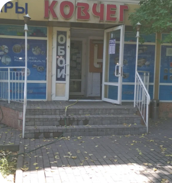

Детский дом "Ковчег"
Мы просим тех, кто хочет внести свой вклад в развитие нашей семьи, связаться с нами для разработки программы мероприятий.
НУЖДЫ – Репетиторство по некоторым школьным предметам. Мастер-классы по различным направлениям ручной деятельности. Занятия спортом (лучше если профессионально).